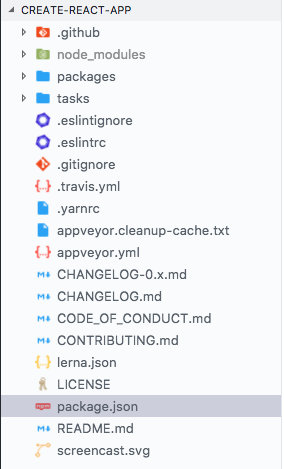
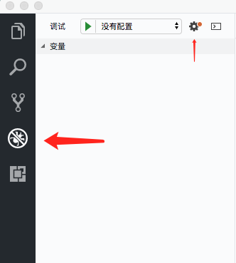
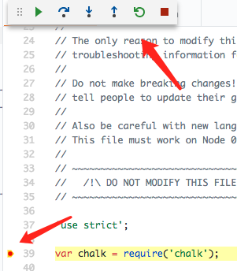
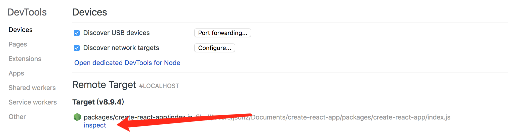
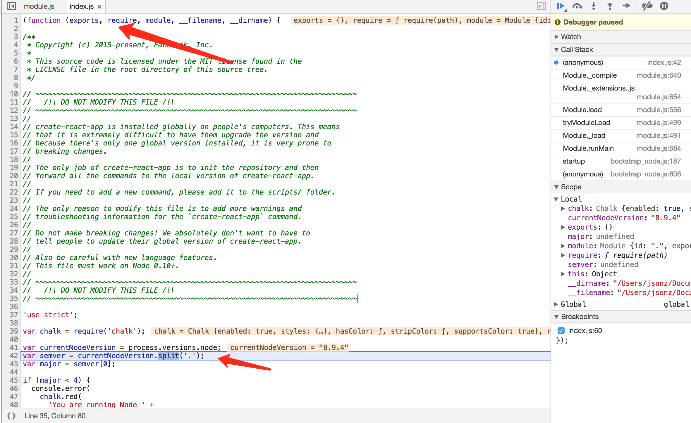
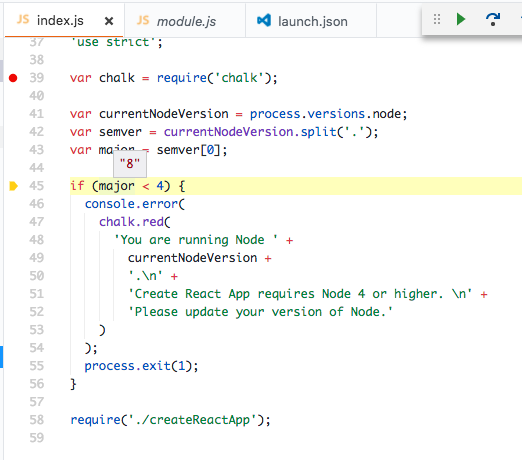

最近工作开始稳定下来，没有那么多加班，加上说投简历找面试一直没拿到面试机会…所以开始有空闲的时间
之前公司有个大佬写了个类似 create-react-app 的脚手架，用来创建公司的项目。一直不知道里面实现的原理，借此机会一探 create-react-app 源码，了解下里面运行的机制。
授人以鱼不如授人以渔，希望通过这篇文章之后，对大家以后看源码可以有所帮助。
大家也不要一看到源码就害怕不敢去看，现在这么优秀项目都开源了，加上各种IDE支持很好，直接打个断点进去调试，很容易看出个大概。
也可以用这种思路去了解其他的开源项目
快速了解
对于想快速了解的直接浏览这一块即可
create-react-app 其实就是用node去跑一些包安装流程，并且把文件模板demo考到对于的目录下。
可以简单分为以下几个步骤:
- 判断Node版本
- 做一些命令行处理的初始化，比如输入
-help则输出帮助内容 - 判断是否有输入项目名，有则根据参数去跑包安装，默认是yarn安装方式，eg:
yarn add react react-dom react-scripts - 修改package.json里面已安装的依赖版本，从精确版本
16.0.0改为^向上兼容版本^16.0.0并加入start,build等启动脚本 - 拷贝
react-scripts下的template到目标文件，里面有public,src等文件夹，其实就是一个简单的可运行demo - END~
继续往下看的小伙伴可以跟着一步一步了解里面的实现逻辑，先例行交代下环境版本:
create-react-app v1.1.4
macOS 10.13.4
node v8.9.4
npm 6.0.0
yarn 1.6.0
vsCode 1.22.2
项目初始化
先上github 拉项目代码，拉下来之后切换到指定的 tag
git clone https://github.com/facebook/create-react-app.gitgit checkout v1.1.4yarn//如果不需要断点调试，这一步可以跳过
这里可能yarn 版本太低的话，会报一系列错误，之前用的是 0.x版本的，升级到1.x就没问题了
下面我们用 root 代替项目的根目录，方便理解
首先我们打开项目能看到一堆的配置文件和两个文件夹：eslint配置文件、travis部署配置、yarn配置、更新日志、开源声明等等…这些我们全都可以不用去看，那我们要看的核心源码放在哪里呢

划重点: 如果项目不知道从哪里入手的话，首先从package.json文件开始1
2
3
4
5
6
7
8
9
10
11
12
13{
"private": true,
"workspaces": [
"packages/*"
],
"scripts": {
"start": "cd packages/react-scripts && node scripts/start.js",
},
"devDependencies": {
},
"lint-staged": {
}
}
打开根目录 package.json 我们可以看到里面很简洁~ npm脚本命令，开发依赖，还有提交钩子，剩下的就是我们要关注的 workspaces 这里指向的是 "packages/*"，所以我们现在的重点就放在 packages 文件夹
packages 文件夹下面也有几个文件夹，这里文件夹命名很规范，一看就知道功能划分，所以还是老套路直接看 root/packages/create-react-app/package.json
1 | { |
这时候没有 workspaces项， 我们可以看 bin bin的功能是把命令对应到可执行的文件，具体的介绍可以看package Document
这里可以简单理解成，当我们全局安装了 create-react-app 之后，跑 create-react-app my-react-app 系统会帮我们去跑 packages/create-react-app/index.js my-react-app
终于找到源码的入口了，对于简单的源码我们可以直接看，对于比较复杂的 或者想要看到执行到每一行代码时那些变量是什么值的情况，我们就要用IDE或其他工具来断点调试代码了。
配置断点调试
对于vscode或node调试 比较熟悉的可以跳过直接看 开始断点阅读源码
vscode debug
对于vscode用户来说，调试非常简单，点击侧边栏的小甲虫图标，点击设置
然后直接修改 “program”的值，修改完点击左上角的绿色箭头就可以跑起来了，如果要在某一处断点，比如 create-react-app/index.js line39 断点，直接在行号的左边点一下鼠标就可以了

1
2
3
4
5
6
7
8
9
10
11{
"version": "0.2.0",
"configurations": [
{
"type": "node",
"request": "launch",
"name": "启动程序",
"program": "${workspaceFolder}/packages/create-react-app/index.js",
}
]
}
node 调试
如果平时没有用vscode开发或者习惯chrome-devtool的，可以直接用node命令跑，然后在chrome里面调试
首先保证node的版本的 6 以上
然后在项目根目录下运行 node --inspect-brk packages/create-react-app/index.js
在chrome地址栏输入 chrome://inspect/#devices 然后就可以看到我们要调试的脚本了
关于node chrome-devtool 调试详细可以看这里 传送门



(ps：这里可以看出来node在模块化的实现是通过用一个函数包裹起来，然后把 exports, requestd等参数传进来以供使用)
开始断点阅读源码
packages/create-react-app/index.js github文件传送门

这个文件十分简单，只是做为一个入口文件判断一下 node版本，小于 4.x的提示并终止程序， 如果正常则加载 ./createReactApp 这个文件，主要的逻辑在该文件实现。
packages/create-react-app/createReactApp.js github文件传送门
顺着我们的断点进入到 createReactApp.js 这个文件有750行乍一看很多，文件头又有十几个依赖引入，但是不要被吓到，一般这种高质量的开源项目，里面有一大半是注释和错误友好信息。
这里建议没有打断点调试的小伙伴试一下把代码复制到另一个js文件，然后先不看前面的依赖，下面用到再去 npm查一下是什么作用的。不要被绕进去看了一个又一个的依赖，核心代码反而没有看到。 然后看一部分之后就把那部分的代码删掉，比如我看了200行，就把前面200行删了，这样剩下500行看着就没有那么心虚了。当然还是建议用断点调试阅读，逻辑会比较清晰。
首先文件头部这一大串的依赖，我们暂时不去关注他们，等后面用到再去查1
2
3
4
5
6
7
8
9
10
11
12
13
14const validateProjectName = require('validate-npm-package-name');
const chalk = require('chalk');
const commander = require('commander');
const fs = require('fs-extra');
const path = require('path');
const execSync = require('child_process').execSync;
const spawn = require('cross-spawn');
const semver = require('semver');
const dns = require('dns');
const tmp = require('tmp');
const unpack = require('tar-pack').unpack;
const url = require('url');
const hyperquest = require('hyperquest');
const envinfo = require('envinfo');
commander 命令行处理程序
接下来顺着我们的断点，第一行被执行的代码是 L56
1 | const program = new commander.Command(packageJson.name) |
这里用到了一个 commander 的依赖，这时候我们就可以去npm 搜一下他的作用了。官网的描述是 The complete solution for node.js command-line interfaces, inspired by Ruby's commander.API documentation 翻译过来是 node.js 命令行接口的完整解决方案，基本的功能看注释即可，大概了解一下有这么一个东西，后面自己要做的时候有门路即可。github传送门。
判断是否有传projectName
1 | if (typeof projectName === 'undefined') { |
往下看是一个判断必须传入的参数 projectName，这里的 projectName 就是上面通过 .action(name => { projectName = name;}) 获取的。
判断如果没有输入的话，直接做一些信息提示，然后终止程序。
这里参数如果传入了 --info 的话， 会执行到envinfo.print。 日常npm 搜一下 envinfo 这是一个用来输出当前环境系统的一些系统信息，比如系统版本，npm等等还有react,react-dom,react-scripts这些包的版本，非常好用。这个包现在的版本和create-react-app的版本差异比较大，但是不影响我们使用~ envinfo npm传送门
如果是用我上面提供的 vscode debug配置的话，到这里程序应该就运行结束了，因为我们在启动调试服务的时候，没有给脚本传入参数作为 projectName，所以我们修改一下 vscode launch.json 加多个字段 "args": ["test-create-react-app"] 忘记怎么设置的点这里~ 传入了 projectName 参数 然后重新启动调试服务1
2
3
4
5
6
7
8
9
10
11
12
13
14{
"version": "0.2.0",
"configurations": [
{
"type": "node",
"request": "launch",
"name": "启动程序",
"program": "${workspaceFolder}/packages/create-react-app/index.js",
"args": [
"test-create-react-app"
]
}
]
}
隐藏的 commander 参数
接着走判断完 projectName 之后，来到 Line140
1 | const hiddenProgram = new commander.Command() |
可以看到这个是一个隐藏的调试选项，给出一个参数用于传入模版路径，给开发人员调试用的…没事不折腾他
createApp
1 | createApp( |
接着往下就是调用了 createApp, 传入的参数对于的含义是：项目名，是否输出额外信息，传入的脚本版本，是否使用npm，调试的模板路径。接下来单步进入函数体看一下 createApp 到底做了什么事情。
1 | function createApp(name, verbose, version, useNpm, template) { |
createReactApp.js createApp 传送门
这里我精简了一些东西，删除一些输出信息，加了一些注释createApp 主要做的事情就是做一些安全判断比如：检查项目名是否合法，检查新建的话是否安全，检查npm版本，处理react-script的版本兼容
具体的执行逻辑写在注释里了，一系列的检查处理之后，调用 run 方法，传入参数为 项目路径，项目名， reactScripts版本， 是否输入额外信息， 运行的路径， 模板（开发调试用的）, 是否使用yarn。
了解大概的流程之后，再一个函数一个函数进去看。
checkAppName() // 检查传入的项目名合法性
isSafeToCreateProjectIn(root, name) // 判断新建这个文件夹是否是安全的
shouldUseYarn() // 检查yarn
checkThatNpmCanReadCwd() // 检查npm
run() // 检查完之后调用run执行安装等操作
checkAppName 检查projectName是否合法
1 | function checkAppName(appName) { |
checkAppName 用于判断当前的项目名是否符合npm规范，比如不能大写等，用的是一个validate-npm-package-name的npm包。这里简化了大部分的错误提示代码，但是不影响口感。
shouldUseYarn 判断是否有装yarn 同理的有 checkThatNpmCanReadCwd 用来判断npm
1 | function shouldUseYarn() { |
run
前面的那些操作可以说都是处理一些判断与兼容逻辑，到run这里才是 真正的核心安装逻辑，开始安装依赖，拷贝模版等。
1 | function run(...) { |
run 做的事情主要有这么几个，先根据传入的版本version 和原始目录originalDirectory 去获取要安装的某个 package。
默认的 version 为空,获取到的 packageToInstall 值是 react-scripts, 然后将packageToInstall拼接到 allDependencies意为所有需要安装的依赖。
这里说一下react-scripts其实就是一系列的webpack配置与模版，属于 create-react-app 另一个核心的一个大模块。传送门
1 | function run(...) { |
然后如果当前是采用yarn安装方式的话，就判断是否处于离线状态。判断完连着前面的 packageToInstall 和 allDependencies 一起丢给 install 方法，再由install方法去跑安装。
run方法
getInstallPackage(); // 获取要安装的模版包 默认是 react-scripts
install(); // 传参数给install 负责安装 allDependencies
init(); // 调用安装了的 react-scripts/script/init 去拷贝模版
.catch(); // 错误处理
install
1 | function install(root, useYarn, dependencies, verbose, isOnline) { |
我们顺着断点从run跑到install方法，能看到代码里根据是否使用yarn分成两种处理方法。if (useYarn) { yarn 安装逻辑 } else { npm 安装逻辑 }
处理方法都是同个逻辑，根据传入的 dependencies 去拼接需要安装的依赖，主要有 react,react-dom,react-script 。再判断verbose和isOnline 加一些命令行的参数。
最后再用node跑命令，平台差异的话是借助cross-spawn去处理的，这里不再赘述。
具体逻辑见上面代码，去掉不重要的信息输出，代码还是比较易懂。
install
根据传进来的参数判断用yarn还是npm
拼装需要的依赖
用cross-spawn跑命令安装
在install会返回一个Promise在安装完之后，断点又回到我们的run函数继续走接下来的逻辑。1
2
3
4
5
6
7
8
9
10function run() {
...
getPackageName()
.then(()=> {
return install(root, useYarn, allDependencies, verbose, isOnline).then(
() => packageName
);
})
...
}
既然我们的install已经把开发需要的依赖安装完了，接下来我们可以开判断当前运行的node是否符合我们已经安装的react-scripts里面的packages.json要求的node版本。
这句话有点绕，简单来说就是判断当前运行的node版本是否react-scripts这个依赖所需。
然后就把开始修改package.json我们已经安装的依赖(react, react-dom, react-scripts)版本从原本的精确版本eg(16.0.0)修改为高于等于版本eg(^16.0.0)。
这些处理做完之后，我们的目录是长这样子的，里面除了安装的依赖和package.json外没有任何东西。所以接下来的操作是生成一些webpack的配置和一个简单的可启动demo。
那么他是怎么快速生成这些东西的呢？
还记得一开始说了有一个 隐藏的命令行参数 --internal-testing-template 用来给开发者调试用的吗，所以其实create-react-app生成这些的方法就是直接把某一个路径的模板拷贝到对应的地方。是不是很简单粗暴hhhhh
1 | run(...) { |
这里安装完依赖之后，执行checkNodeVersion判断node版本是否与依赖相符。
之后拼接路径去跑目录/node_modules/react-scripts/scripts/init.js，传参让他去做一些初始化的事情。
然后对出错情况做一些相应的处理
/node_modules/react-scripts/script/init.js
1 | module.exports = function( |
init文件又是一个大头，处理的逻辑主要有
- 修改package.json，写入一些启动脚本，比如
script: {start: 'react-scripts start'}，用来启动开发项目- 改写README.MD，把一些帮助信息写进去
- 把预设的模版拷贝到项目下，主要有
public,src/[APP.css, APP.js, index.js,....],.gitignore- 对旧版的node做一些兼容的处理，这里补一句，在选择 react-scripts 时就有根据node版本去判断选择比较老的 @0.9.x 版。
- 如果完成输出对应的信息，如果失败，做一些输出日志等操作。
这里代码有点多，所以删了一小部分，如果对初始的代码感兴趣可以跳转到这儿看react-scripts/scripts/init.js 传送门
END~
到这里 create-react-app 项目构建的部分大流程已经走完了，我们来回顾一下：
- 判断node版本如果小于4就退出，否则执行
createReactApp.js文件 createReactApp.js先做一些命令行的处理响应处理，然后判断是否有传入projectName没有就提示并退出- 根据传入的
projectName创建目录，并创建package.json。 - 判断是否有特殊要求指定安装某个版本的
react-scripts，然后用cross-spawn去处理跨平台的命令行问题，用yarn或npm安装react,react-dom,react-scripts。 - 安装完之后跑
react-scripts/script/init.js修改package.json的依赖版本，运行脚本，并拷贝对应的模板到目录里。 - 处理完这些之后，输出提示给用户。
本来想把整个 create-react-app 说完，但是发现说一个创建就写了这么多，所以后面如果有想继续看 react-scripts的话，会另外开一篇来讲。
大家也可以根据这个思路自己断点去看，不过 react-scripts 主要可能是webpack配置居多，断点帮助应该不大。